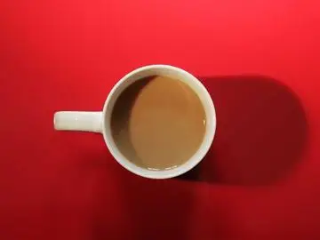

Устали искать посты в три часа ночи?
Есть решение! Обычные автопостеры публикуют то, что вы нашли сами. Postä сам находит посты по вашей теме, раскладывает их по расписанию и публикует. Это не магия, это автопилот.
* Тариф «Смотреть» — бесплатно навсегда. Неделя Автопилота — 49 ₽, по цене хот-дога. Без смс, но с регистрацией. 18+ Postä отсеивает сам.

Нажмите! Внутри — картинки и видео на любые темы, кроме 18+*
Тренд живёт пару часов
Лента лучших постов по вашей теме открыта всем и бесплатно. Только бесплатно тренды приходят с опозданием, а в канал всё переносится руками. Сравните сами:

Скачали, скопировали, вставили, поправили подпись… Повторить 10 раз в день.
Или вообще не нажимайте: автопилот опубликует сам по расписанию.
Хотите постить в один клик и ловить тренды, пока они горячие? Это стоит как две чашки кофе — 390,– в месяц. Кофе остынет, а ваш канал — нет.
Что ещё умеет Postä? Всё это!
Нейросеть разглядывает пост, как придирчивый редактор, и пропускает только то, что действительно по теме.
Раскладывает ролик на кадры и решает, подходит ли он вашей теме.
Каналы Telegram, паблики ВКонтакте, форумы и имиджборды. Вы только одобряете находки.
Мемы и котики сразу? Пожалуйста! Пост пройдёт, только если подходит под обе.
Пара дизлайков источнику — и он больше не попадётся. Без звонков в службу поддержки.
В посте пять картинок? Опубликует все пять, в том же порядке. Ни одна не потеряется!
Подождите! Это ещё не всё!
Всего три шага!
| Сравните сами! | Обычный админ | Обычный автопостер | Postä |
|---|---|---|---|
| Сам находит посты по теме | ✗ищет ночами | ✗постит то, что дали | ✓сам |
| Смотрит каждую картинку источника | ✗некогда | ✗не умеет | ✓все до одной |
| Замечает баяны | ~иногда | ✗нет | ✓всегда |
| Постит, пока вы в отпуске | ✗сам в отпуске | ~если заранее загрузили | ✓по расписанию |
| Устраивает цирк с расписанием | ✓ежедневно | ✗нет | ✗всё по часам |
| Можно попробовать без риска | —трудовой договор | ✗платно с первого дня | ✓бесплатно и неделя за 49 ₽ |
| Просит зарплату | ✓каждый месяц | ✓с первого дня | ✓от 0 ₽ |
Мне помогло!
Раньше я искала посты про рассаду до утра. Теперь рассада растёт, а я сплю.ГГалина, 54 года, канал про дачуРоль Галины исполняет актриса
Я подключил три канала и впервые за год посмотрел сериал целиком.ААртём, 27 лет, сетка мем-пабликовРоль Артёма исполняет актёр
Минус звезда: теперь мне нечем заняться по вечерам. Пришлось завести хобби.ММарина, 35 лет, канал про котиковРоль Марины исполняет актриса
Отзывы сыграны для смеха: Postä пока в бете, настоящие появятся после первых пользователей.
А вдруг запостит не то?
 Бу! Испугался?
Бу! Испугался?
Каждый пост ждёт в очереди 6 часов, и его можно отклонить одним нажатием. Не готовы доверять — оставайтесь в ручном режиме, автопилот включите позже.
У каждого поста есть источник, и Postä может указывать его в подписи. Авторы получают переходы, вы — контент.
Публикация идёт через официальные инструменты площадок в обычном темпе: пять постов в день не отличаются от ручной работы.
Каждый пост разбирает наша видеокарта, и её время не бесплатное. Смотреть ленту можно всегда и даром, а свежие тренды и публикация в один клик — на Автопилоте.
Автопостер публикует то, что вы ему загрузили: искать контент всё равно вам. Postä сам находит посты по теме, смотрит каждую картинку и видео и отсеивает баяны.
Нет. В Telegram канал подключается через нашего бота: вы добавляете его администратором и в любой момент можете убрать.
Конечно. Большинство так и начинает с Автопилота, а сетку собирает, когда видит, что посты залетают.
Тему вы задаёте словами: «Котики», «Ретроавто», «Кухня». Нейросеть составит критерии и проверит по ним каждый пост.
Сколько стоит? Меньше, чем ваш выходной!
Смотреть
- Топ-20 постов дня по вашей теме
- Тренды с задержкой 2 часа
- В канал — вручную: скачать, скопировать, вставить
- 1 канал
Автопилот
- Тренды в реальном времени
- Пост в канал в один клик
- Автопилот и расписание
- 1 канал, до 10 постов в день
- Отчёт: что зашло
Сетка
- До 5 каналов на разных площадках
- 198 ₽ за канал — вдвое дешевле
- Своя тема у каждого
- Приоритет в подборе
Все функции Автопилота на 7 дней: тренды сразу, посты в один клик, расписание. Не понравится — просто не пополняйте баланс: подписок и автосписаний у нас нет.
Сегодня алгоритм нашёл 214 подходящих постов. В ваш канал ушло 10. Остальные 204 пропали зря.
Запустите ещё каналы на соседние темы — софт всё равно делает всю работу. Сетка: 5 каналов за 990,–, это 198 ₽ за канал.
Через месяц понял: автоматика работает, контент залетает, времени полно. Так у меня стало три канала.ДДенис, 31 год, сетка про путешествияРоль Дениса исполняет актёр
Цифры в подсказке — пример: у каждой темы своё число находок.